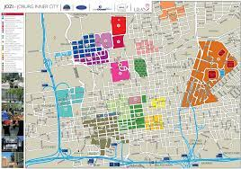
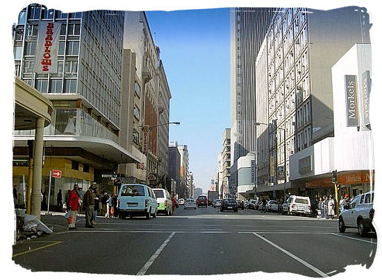
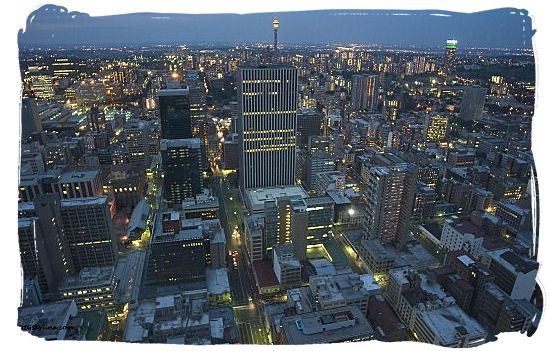

Land use
Map Of Johannesburg
Business District

CBD
DUCK
Johannesburg is dominated by four sectors:
Financial and Business services
Retail and wholetrade
Community and social services
Maunfacturing sector
Mining was the foundation of the Witwatersrand's economy, but its importance is gradually declining due to dwindling reserves and service and manufacturing industries have become more significant to the city's economy. While gold mining no longer takes place within the city limits, most mining companies still have their headquarters in Johannesburg. The city's manufacturing industries extend across a range of areas and there is still a reliance on heavy industries including steel and cement plants.
The service and other industries include banking, IT, real estate, transport, broadcast and print media, private health care, transport and a vibrant leisure and consumer retail market. Johannesburg has Africa's largest stock exchange, the JSE although it has moved out of the central business district. Due to its commercial role, the city is the seat of the provincial government and the site of a number of government branch offices, as well as consular offices and other institutions